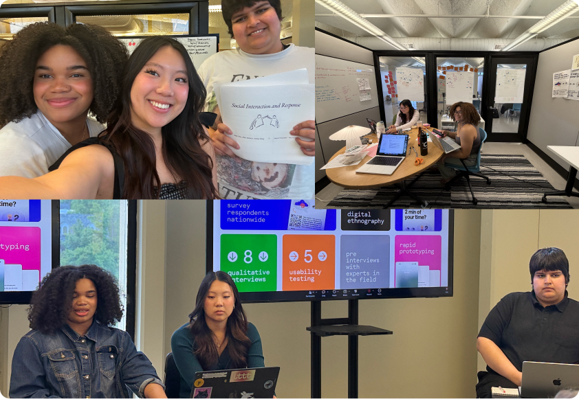
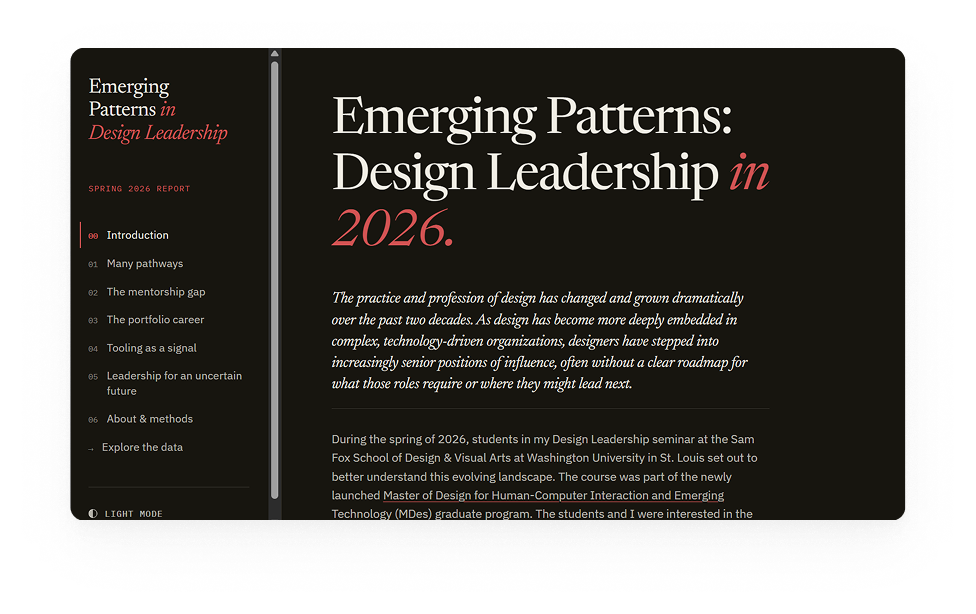
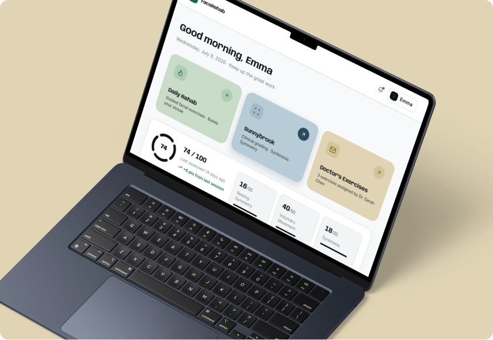
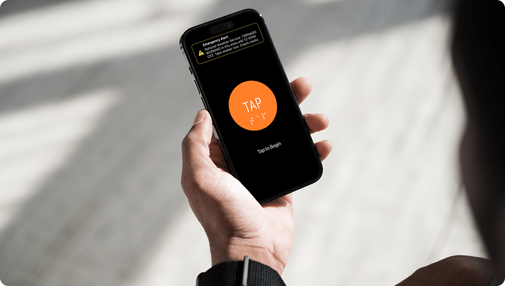
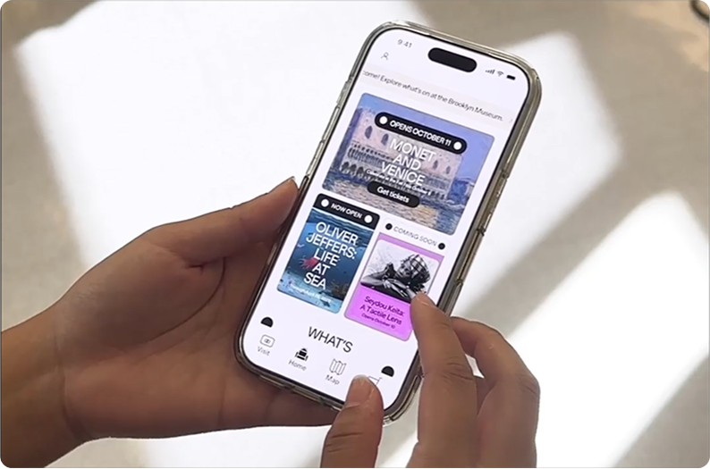

2026 Design Leadership Survey Public research report on the state of design leadership Research 4 months
2026 Agentic Web Designing a Campus-Scale Internet of Agents Interface Lead Designer Summer Internship 2026
Facial Rehab
Designing an AI-Powered Facial Rehabilitation Tool
Lead Designer
Summer Internship
2026
Facial Rehab
Designing an AI-Powered Facial Rehabilitation Tool
Lead Designer
Summer Internship

2026 Tap 2 Map Multi-sensory Wayfinding for Visually Impaired Occupants During Tornado Shelter Events Design Fabrication 5 weeks
2026 Brooklyn Museum App Designing a mobile experience that complements the museum visit with real-time data on exhibits, wait times, and personalized guidance. Co-Designer 4 Weeks